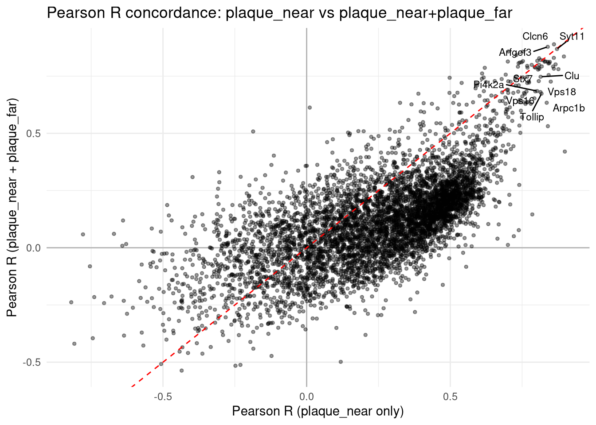
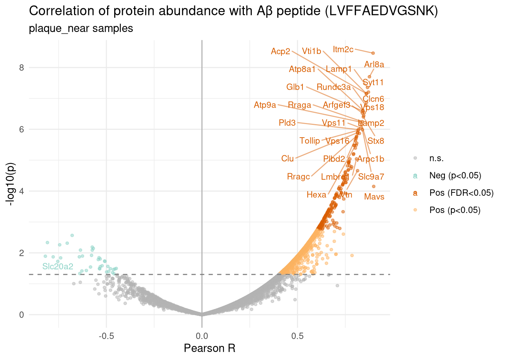
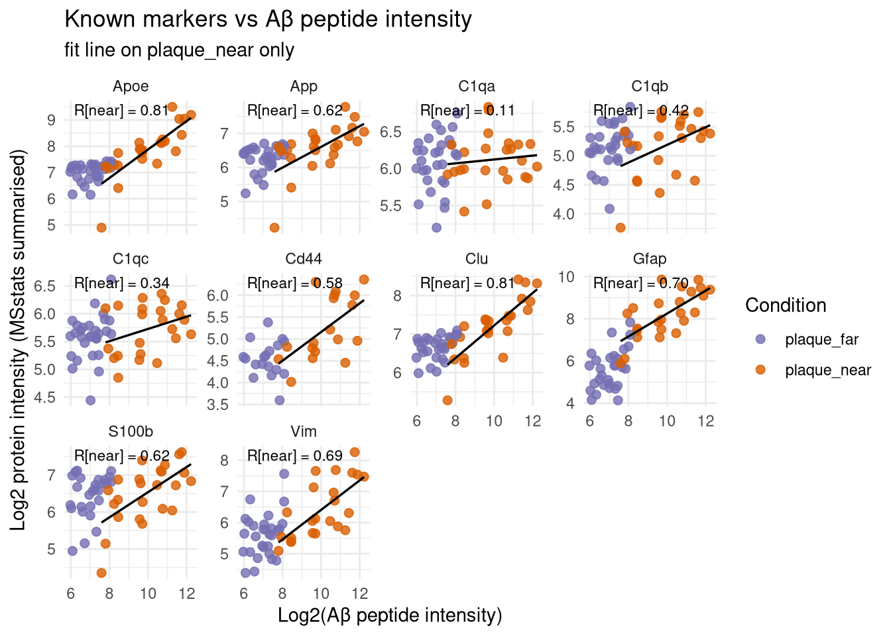

Code
suppressPackageStartupMessages({
library(data.table)
library(qs2)
library(dplyr)
library(tidyr)
library(tibble)
library(ggplot2)
library(ggrepel)
library(purrr)
})Identify proteins whose MSstats-summarised abundance tracks the Aβ tryptic peptide (LVFFAEDVGSNK) signal across samples.
Primary analysis is restricted to plaque_near — asks “within plaque regions, what co-varies with Aβ load?”. A secondary plaque_near + plaque_far analysis serves as a sensitivity check with wider dynamic range.
suppressPackageStartupMessages({
library(data.table)
library(qs2)
library(dplyr)
library(tidyr)
library(tibble)
library(ggplot2)
library(ggrepel)
library(purrr)
})base_dir <- "/nemo/lab/destrooperb/home/shared/zanettc/millie_proteomics"
run_num <- "run5"
results_dir <- file.path(base_dir, "results", run_num)
objects_dir <- file.path(base_dir, "data", "processed", run_num)
graphs_dir <- file.path(results_dir, "ab_correlation")
dir.create(graphs_dir, recursive = TRUE, showWarnings = FALSE)processed_data <- qs_read(file.path(objects_dir, "processed_msstats_data.qs2"))
protein_dict <- fread(file.path(base_dir, "data/processed/run1/clean_spec_raw.csv")) %>%
dplyr::select(Protein = PG.ProteinGroups, Gene = PG.Genes) %>%
distinct()
wide_df <- processed_data$ProteinLevelData %>%
left_join(protein_dict, by = "Protein") %>%
mutate(Gene = ifelse(is.na(Gene) | Gene == "", Protein, Gene)) %>%
group_by(originalRUN, Gene) %>%
summarize(Abundance = mean(LogIntensities, na.rm = TRUE), .groups = "drop") %>%
pivot_wider(names_from = Gene, values_from = Abundance) %>%
column_to_rownames("originalRUN")
cat("Wide matrix: ", nrow(wide_df), "runs x ", ncol(wide_df), "genes\n")Wide matrix: 82 runs x 5563 genesSum fragment-level F.PeakArea across all precursors of LVFFAEDVGSNK per run, then log2-transform. Runs not covered by the clean msstats data are dropped.
target_peptide <- "LVFFAEDVGSNK"
msstats_clean <- qs_read(file.path(base_dir, "data/processed/run1/clean_msstats_input.qs2"))
ab_target <- as.data.table(msstats_clean)[
PEP.StrippedSequence == target_peptide,
.(ab_intensity = sum(F.PeakArea, na.rm = TRUE)),
by = R.FileName
] %>%
as_tibble() %>%
mutate(Ab_log2 = log2(ab_intensity + 1)) %>%
dplyr::rename(Run = R.FileName) %>%
dplyr::select(Run, Ab_log2)
rm(msstats_clean); invisible(gc())
cat("Aβ target vector: ", nrow(ab_target), "runs\n")Aβ target vector: 159 runssummary(ab_target$Ab_log2) Min. 1st Qu. Median Mean 3rd Qu. Max.
2.397 6.329 7.398 7.641 8.601 12.531 final_clean_meta <- read.csv(file.path(base_dir, "data/processed/run1/msstats_annotation.csv"))
near_runs <- final_clean_meta$Run[final_clean_meta$Condition == "plaque_near"]
nearfar_runs <- final_clean_meta$Run[final_clean_meta$Condition %in% c("plaque_near", "plaque_far")]
cat("plaque_near runs:", length(near_runs), "\n")plaque_near runs: 24 cat("plaque_near + plaque_far runs:", length(nearfar_runs), "\n")plaque_near + plaque_far runs: 53 # Intersect with the runs that actually have an Aβ measurement
cat("plaque_near with Aβ signal:", sum(near_runs %in% ab_target$Run), "\n")plaque_near with Aβ signal: 24 cat("near+far with Aβ signal:", sum(nearfar_runs %in% ab_target$Run), "\n")near+far with Aβ signal: 53 correlate_to_ab <- function(sample_runs, wide_df, ab_target, min_n = 4) {
runs_keep <- intersect(intersect(sample_runs, rownames(wide_df)), ab_target$Run)
if (length(runs_keep) < min_n) {
stop("Fewer than ", min_n, " samples available for correlation.")
}
data_sub <- wide_df[runs_keep, , drop = FALSE]
ab_vec <- ab_target$Ab_log2[match(runs_keep, ab_target$Run)]
genes <- colnames(data_sub)
results <- map_dfr(genes, function(g) {
x <- data_sub[[g]]
y <- ab_vec
keep <- !is.na(x) & !is.na(y)
n <- sum(keep)
if (n < min_n) return(NULL)
# Guard against zero-variance vectors (Spearman/Pearson throw warnings)
if (sd(x[keep]) == 0 || sd(y[keep]) == 0) return(NULL)
p_test <- suppressWarnings(cor.test(x[keep], y[keep], method = "pearson"))
s_test <- suppressWarnings(cor.test(x[keep], y[keep], method = "spearman",
exact = FALSE))
tibble(
Gene = g,
n_pairs = n,
Pearson_R = unname(p_test$estimate),
Pearson_p = p_test$p.value,
Spearman_rho = unname(s_test$estimate),
Spearman_p = s_test$p.value
)
})
results %>%
mutate(
Pearson_FDR = p.adjust(Pearson_p, method = "BH"),
Spearman_FDR = p.adjust(Spearman_p, method = "BH")
) %>%
arrange(desc(Pearson_R))
}ab_cors_near <- correlate_to_ab(near_runs, wide_df, ab_target)
cat("Primary analysis: ", nrow(ab_cors_near), "genes correlated, n_pairs =",
unique(ab_cors_near$n_pairs), "\n\n")Primary analysis: 5563 genes correlated, n_pairs = 12 24 23 22 19 21 9 20 14 18 16 6 17 15 13 10 11 8 5 7 head(ab_cors_near, 20)tail(ab_cors_near, 20)write.csv(ab_cors_near,
file.path(objects_dir, "ab_correlation_near.csv"),
row.names = FALSE)ab_cors_nearfar <- correlate_to_ab(nearfar_runs, wide_df, ab_target)
cat("Sensitivity analysis: ", nrow(ab_cors_nearfar), "genes correlated, n_pairs =",
unique(ab_cors_nearfar$n_pairs), "\n\n")Sensitivity analysis: 5563 genes correlated, n_pairs = 52 53 50 47 49 27 51 48 46 42 41 22 30 23 45 17 34 16 38 18 44 28 36 43 31 21 25 33 24 37 40 19 35 26 20 32 39 29 15 head(ab_cors_nearfar, 20)tail(ab_cors_nearfar, 20)write.csv(ab_cors_nearfar,
file.path(objects_dir, "ab_correlation_near_far.csv"),
row.names = FALSE)Top hits that survive both are the most defensible candidates.
concord <- ab_cors_near %>%
dplyr::select(Gene,
R_near = Pearson_R,
p_near = Pearson_p,
FDR_near = Pearson_FDR) %>%
inner_join(
ab_cors_nearfar %>%
dplyr::select(Gene,
R_nearfar = Pearson_R,
p_nearfar = Pearson_p,
FDR_nearfar = Pearson_FDR),
by = "Gene"
) %>%
arrange(desc(R_near))
ggplot(concord, aes(R_near, R_nearfar)) +
geom_hline(yintercept = 0, colour = "grey70") +
geom_vline(xintercept = 0, colour = "grey70") +
geom_point(alpha = 0.4, size = 1) +
geom_abline(slope = 1, intercept = 0, linetype = "dashed", colour = "red") +
geom_text_repel(
data = concord %>% filter(abs(R_near) > 0.8 & abs(R_nearfar) > 0.6),
aes(label = Gene), size = 3, max.overlaps = 30
) +
labs(
title = "Pearson R concordance: plaque_near vs plaque_near+plaque_far",
x = "Pearson R (plaque_near only)",
y = "Pearson R (plaque_near + plaque_far)"
) +
theme_minimal()Warning: ggrepel: 22 unlabeled data points (too many overlaps). Consider
increasing max.overlaps
ggsave(file.path(graphs_dir, "concordance_R_near_vs_nearfar.pdf"),
width = 8, height = 7)Warning: ggrepel: 12 unlabeled data points (too many overlaps). Consider
increasing max.overlapsvolcano_df <- ab_cors_near %>%
mutate(neg_log10_p = -log10(Pearson_p),
sig = case_when(
Pearson_FDR < 0.05 & Pearson_R > 0 ~ "Pos (FDR<0.05)",
Pearson_FDR < 0.05 & Pearson_R < 0 ~ "Neg (FDR<0.05)",
Pearson_p < 0.05 & Pearson_R > 0 ~ "Pos (p<0.05)",
Pearson_p < 0.05 & Pearson_R < 0 ~ "Neg (p<0.05)",
TRUE ~ "n.s."
))
top_labels <- volcano_df %>%
filter(Pearson_p < 0.05) %>%
slice_max(order_by = abs(Pearson_R), n = 30)
ggplot(volcano_df, aes(Pearson_R, neg_log10_p, colour = sig)) +
geom_point(alpha = 0.5, size = 1) +
geom_vline(xintercept = 0, colour = "grey70") +
geom_hline(yintercept = -log10(0.05), linetype = "dashed", colour = "grey50") +
geom_text_repel(
data = top_labels,
aes(label = Gene),
size = 3, max.overlaps = 35,
box.padding = 0.4, segment.alpha = 0.5
) +
scale_colour_manual(values = c(
"Pos (FDR<0.05)" = "#d95f02",
"Neg (FDR<0.05)" = "#1b9e77",
"Pos (p<0.05)" = "#fdb462",
"Neg (p<0.05)" = "#8dd3c7",
"n.s." = "grey70"
)) +
labs(
title = paste0("Correlation of protein abundance with Aβ peptide (",
target_peptide, ")"),
subtitle = "plaque_near samples",
x = "Pearson R",
y = "-log10(p)"
) +
theme_minimal() +
theme(legend.title = element_blank())
ggsave(file.path(graphs_dir, "volcano_ab_correlation_near.pdf"),
width = 10, height = 7)Warning in grid.Call.graphics(C_text, as.graphicsAnnot(x$label), x$x, x$y, :
conversion failure on 'Correlation of protein abundance with Aβ peptide
(LVFFAEDVGSNK)' in 'mbcsToSbcs': for β (U+03B2)marker_genes <- c("Gfap", "App", "Apoe", "Clu", "C1qa", "C1qb", "C1qc",
"Trem2", "Cd44", "Vim", "S100b")
marker_genes <- intersect(marker_genes, colnames(wide_df))
scatter_runs <- intersect(nearfar_runs, ab_target$Run)
scatter_runs <- intersect(scatter_runs, rownames(wide_df))
scatter_df <- tibble(Run = scatter_runs) %>%
mutate(Ab_log2 = ab_target$Ab_log2[match(Run, ab_target$Run)]) %>%
left_join(final_clean_meta %>% dplyr::select(Run, Condition), by = "Run")
for (g in marker_genes) {
scatter_df[[g]] <- wide_df[scatter_df$Run, g]
}
scatter_long <- scatter_df %>%
pivot_longer(cols = all_of(marker_genes),
names_to = "Gene",
values_to = "LogIntensity")
# Compute per-gene R within plaque_near only, for the panel annotations
anno_df <- scatter_long %>%
filter(Condition == "plaque_near") %>%
group_by(Gene) %>%
summarise(
R = cor(Ab_log2, LogIntensity, use = "pairwise.complete.obs"),
.groups = "drop"
) %>%
mutate(label = sprintf("R[near] = %.2f", R))
ggplot(scatter_long, aes(Ab_log2, LogIntensity, colour = Condition)) +
geom_point(size = 2, alpha = 0.8) +
geom_smooth(data = scatter_long %>% filter(Condition == "plaque_near"),
aes(group = 1), method = "lm", se = FALSE,
colour = "black", linewidth = 0.6) +
geom_text(data = anno_df,
aes(x = -Inf, y = Inf, label = label),
hjust = -0.1, vjust = 1.3, inherit.aes = FALSE, size = 3) +
facet_wrap(~ Gene, scales = "free_y") +
scale_colour_manual(values = c(
"control" = "#1b9e77",
"plaque_far" = "#7570b3",
"plaque_near" = "#d95f02"
)) +
labs(
title = "Known markers vs Aβ peptide intensity",
subtitle = "fit line on plaque_near only",
x = "Log2(Aβ peptide intensity)",
y = "Log2 protein intensity (MSstats summarised)"
) +
theme_minimal()`geom_smooth()` using formula = 'y ~ x'Warning: Removed 8 rows containing non-finite outside the scale range
(`stat_smooth()`).Warning: Removed 21 rows containing missing values or values outside the scale range
(`geom_point()`).
ggsave(file.path(graphs_dir, "ab_marker_scatter.pdf"),
width = 12, height = 9)`geom_smooth()` using formula = 'y ~ x'Warning: Removed 8 rows containing non-finite outside the scale range (`stat_smooth()`).
Removed 21 rows containing missing values or values outside the scale range
(`geom_point()`).Warning in grid.Call.graphics(C_text, as.graphicsAnnot(x$label), x$x, x$y, :
conversion failure on 'Log2(Aβ peptide intensity)' in 'mbcsToSbcs': for β
(U+03B2)Warning in grid.Call.graphics(C_text, as.graphicsAnnot(x$label), x$x, x$y, :
conversion failure on 'Known markers vs Aβ peptide intensity' in 'mbcsToSbcs':
for β (U+03B2)sessionInfo()R version 4.5.1 (2025-06-13)
Platform: x86_64-pc-linux-gnu
Running under: Rocky Linux 8.7 (Green Obsidian)
Matrix products: default
BLAS/LAPACK: FlexiBLAS OPENBLAS; LAPACK version 3.12.0
locale:
[1] LC_CTYPE=en_GB.UTF-8 LC_NUMERIC=C
[3] LC_TIME=en_GB.UTF-8 LC_COLLATE=en_GB.UTF-8
[5] LC_MONETARY=en_GB.UTF-8 LC_MESSAGES=en_GB.UTF-8
[7] LC_PAPER=en_GB.UTF-8 LC_NAME=C
[9] LC_ADDRESS=C LC_TELEPHONE=C
[11] LC_MEASUREMENT=en_GB.UTF-8 LC_IDENTIFICATION=C
time zone: Europe/London
tzcode source: system (glibc)
attached base packages:
[1] stats graphics grDevices utils datasets methods base
other attached packages:
[1] purrr_1.2.1 ggrepel_0.9.6 ggplot2_4.0.2
[4] tibble_3.3.1 tidyr_1.3.2 dplyr_1.2.0
[7] qs2_0.1.6 data.table_1.18.2.1
loaded via a namespace (and not attached):
[1] Matrix_1.7-4 gtable_0.3.6 jsonlite_2.0.0
[4] compiler_4.5.1 tidyselect_1.2.1 Rcpp_1.1.1
[7] splines_4.5.1 textshaping_1.0.3 systemfonts_1.3.1
[10] scales_1.4.0 yaml_2.3.12 fastmap_1.2.0
[13] lattice_0.22-7 R6_2.6.1 labeling_0.4.3
[16] generics_0.1.4 knitr_1.51 htmlwidgets_1.6.4
[19] stringfish_0.17.0 pillar_1.11.1 RColorBrewer_1.1-3
[22] rlang_1.1.7 xfun_0.56 S7_0.2.1
[25] RcppParallel_5.1.11-1 otel_0.2.0 cli_3.6.5
[28] mgcv_1.9-4 withr_3.0.2 magrittr_2.0.4
[31] digest_0.6.39 grid_4.5.1 nlme_3.1-168
[34] lifecycle_1.0.5 vctrs_0.7.1 evaluate_1.0.5
[37] glue_1.8.0 farver_2.1.2 ragg_1.5.0
[40] rmarkdown_2.30 tools_4.5.1 pkgconfig_2.0.3
[43] htmltools_0.5.9